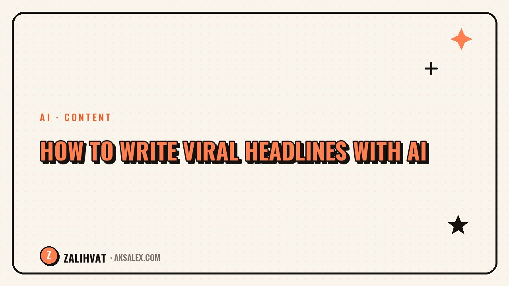

How to Write Viral Headlines with AI

The headline decides whether a post gets opened or scrolled past. AI is great at cranking out variants - it never gets tired of "I've already written something like this," and it can spit out a dozen angles in seconds. But if you just copy the first suggested option, you risk ending up with clickbait that has no substance behind it. Let's look at how to use AI as a brainstorming tool, not as the author of your final headline.
Why headlines decide everything - but not all at once
A headline is only responsible for one stage - the click or the open. After that, the content takes over: if the text doesn't deliver on the headline's promise, the audience leaves quickly, and the algorithm registers that as low-quality content. So a viral headline without strong content behind it works against you in the long run.
This is where AI is useful - it helps you quickly test different angles on the same topic (a question, a number, a conflict, personal experience) before you sit down to write the actual text.
Headline formulas that work
- A question the reader wants answered right now
- A specific number or timeframe ("in 5 minutes," "3 mistakes")
- A promise of a result with a stated condition
- Breaking a stereotype or an unexpected fact
- Personal experience with a concrete outcome
How to ask AI to generate variants
Don't just ask it to "come up with a headline." Give it context: the topic, the target audience, the tone of voice, and ask for 10-15 variants right away, based on different formulas. The more specific the prompt, the less filler in the response - and the faster you'll find a variant that works.
How to pick a variant from the AI's list
Cross out right away any variants from the generated list that promise something the text doesn't actually deliver. Clickbait without substance gives you a short-term reach spike and a long-term drop in trust.
A good headline is an honest compression of the text into one phrase - not bait unrelated to the content.
Read the remaining variants out loud. The one that sounds natural in your own way of speaking is your candidate for publishing - keep the rest as backups for future posts on similar topics.
Table: formula and example
| Formula | Example approach | When it fits |
|---|---|---|
| Question | Why aren't your Reels getting reach? | Educational content |
| Number | 5 mistakes that kill your reach | Lists and breakdowns |
| Conflict | Everyone says post more often - they're wrong | Expert opinion |
| Personal experience | I stopped showing my face, and here's what happened | Case studies and stories |
Common mistakes when working with AI
The first mistake is taking the first variant without comparing it to alternatives. AI produces results fast, but the first answer is rarely the sharpest one - it's worth generating a few batches and comparing them.
The second mistake is using the templated phrases the AI itself repeats in every generation: "you won't believe," "shocking content," excessive exclamation marks. Audiences already read these phrases as a sign of low-quality content.
- Taking the first variant without comparison
- Copying template clickbait phrases
- Promising something the text doesn't deliver
- Ignoring the stats on headlines you've already published
How to test headlines in practice
If the platform format allows it, publish similar content with different headlines at different times and compare open rates. Even without A/B testing, you can keep a table: headline, formula, reach, retention.
After a few weeks, you'll be able to see which formulas consistently work for your audience. It's worth feeding these working patterns back into your AI prompt as a reference for future generations - that way each new batch of variants gets sharper than the last.
Frequently Asked Questions
Can I just copy the headline the AI suggested?
You can, but it's better to first check whether it sounds natural in your voice and matches the content of the text, otherwise your audience will notice quickly.
How many headline variants should I generate at once?
Usually 10-15 variants are enough to give you something to choose from without spending too much time on it.
How do I avoid clickbait when generating headlines with AI?
Cross out any variants that promise something the text doesn't deliver, and keep only the ones that honestly reflect the content.
Should I change the headline if a post isn't getting reach?
Yes - if retention within the text is good but the open rate is low, the problem is specifically the headline, and it's worth testing a different formula.
How can I tell if a headline sounds generic, like it came from AI?
If it has excessive exclamation marks, phrases like "you won't believe," or generic wording without specifics - that's a sign of a template and it's worth rewriting.
not by hand